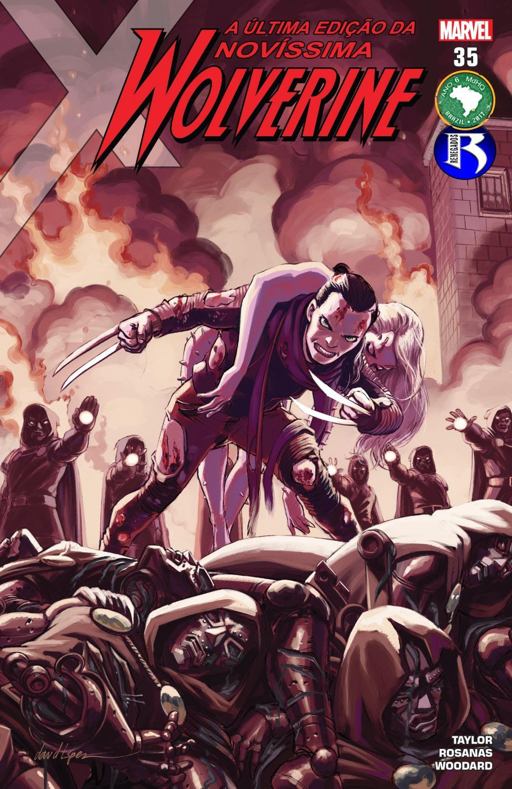

Buscar

Novíssima Wolverine V1 (2015)
STATUS:
Concluído
Editora:
Marvel comics
Ela chegou pra assumir o manto daquele que ela considera um pai. Ela á clone dele e sofreu e sofre dos mesmos traumas que o falecido carcaju mutante.
E pra continuar seu legado, ela é a NOVÍSSIMA WOLVERINE.
Ler agora!